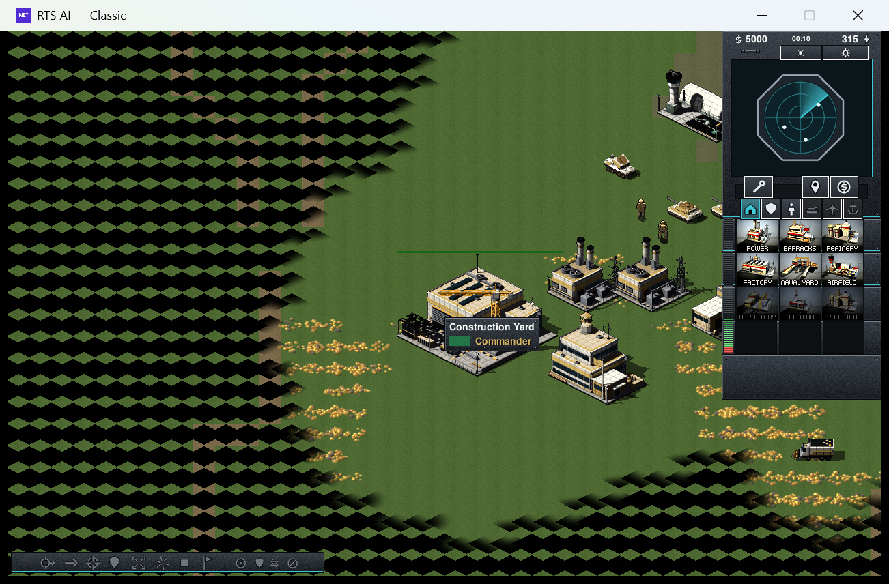
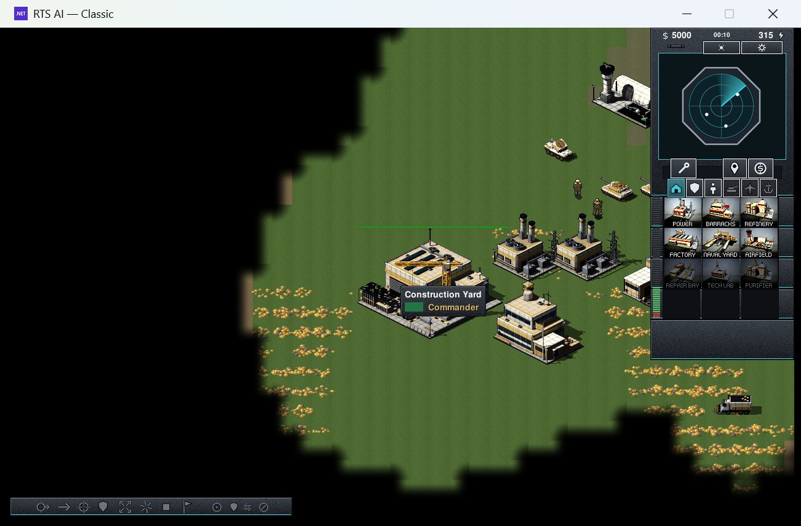
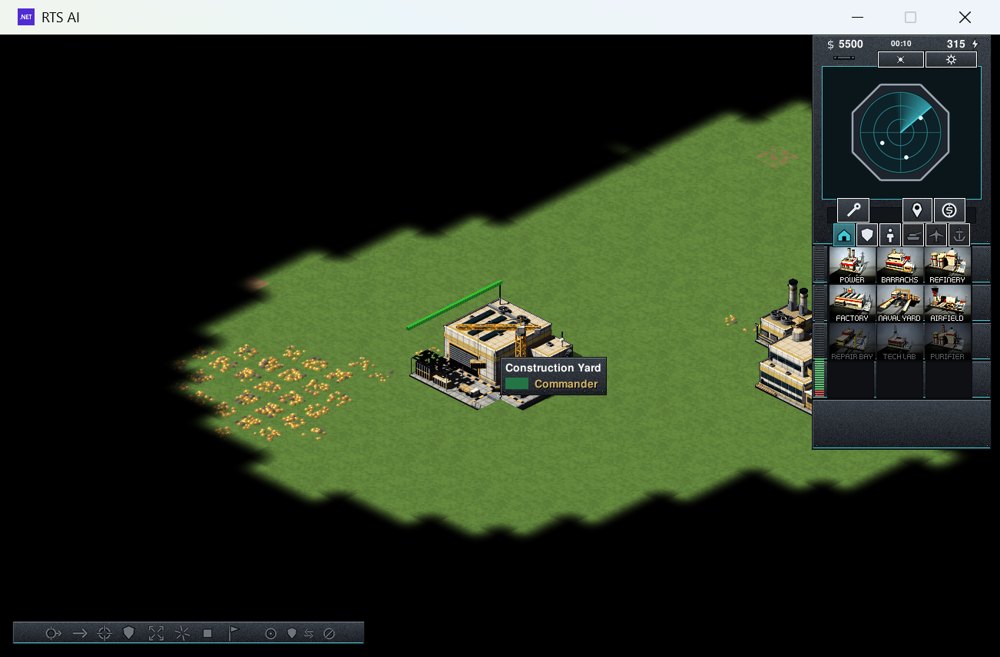

Assisted fixtures run the production campaign trait. They seed required buildings/units, transfer capture targets and remove enemy combat pressure. Convoys and amphibious units use actual movement. The runner never marks objectives complete or failed. E / N / H = Easy / Normal / Hard.
| Mission | Classic E / N / H | RA2 E / N / H |
|---|---|---|
| Jizan Corridor | 8/8 8/8 8/8 | 8/8 8/8 8/8 |
| Hodeidah Lifeline | 11/11 11/11 11/11 | 11/11 11/11 11/11 |
| Straits Shield | 4/4 4/4 4/4 | 4/4 4/4 4/4 |
| Haitan Network | 6/6 6/6 6/6 | 6/6 6/6 6/6 |
| Bab al-Mandab Passage | 6/6 6/6 6/6 | 6/6 6/6 6/6 |
| Relay Under Siege | 3/3 3/3 3/3 | 3/3 3/3 3/3 |
| Mode / difficulty | Fixture | Expected → actual |
|---|---|---|
| rtsai / normal | win | won → won |
| rtsai / normal | army-wipe | lost → lost |
| rtsai / normal | base-SaudiConyard | lost → lost |
| rtsai / normal | objective-0-RadarNode | lost → lost |
| rtsai / normal | convoy-2 | lost → lost |
| rtsai / normal | objective-3-PortDepot | won → won |
| rtsai / normal | objective-3-Desalination | won → won |
| rtsai-topdown / normal | win | won → won |
| rtsai-topdown / normal | army-wipe | lost → lost |
| rtsai-topdown / normal | base-SaudiConyard | lost → lost |
| rtsai-topdown / normal | objective-0-RadarNode | lost → lost |
| rtsai-topdown / normal | convoy-2 | lost → lost |
| rtsai-topdown / normal | objective-3-PortDepot | won → won |
| rtsai-topdown / normal | objective-3-Desalination | won → won |
| rtsai / easy | win | won → won |
| rtsai / easy | army-wipe | lost → lost |
| rtsai / easy | base-SaudiConyard | lost → lost |
| rtsai / easy | objective-0-RadarNode | lost → lost |
| rtsai / easy | convoy-2 | lost → lost |
| rtsai / easy | objective-3-PortDepot | won → won |
| rtsai / easy | objective-3-Desalination | won → won |
| rtsai-topdown / hard | win | won → won |
| rtsai-topdown / hard | army-wipe | lost → lost |
| rtsai-topdown / hard | base-SaudiConyard | lost → lost |
| rtsai-topdown / hard | objective-0-RadarNode | lost → lost |
| rtsai-topdown / hard | convoy-2 | lost → lost |
| rtsai-topdown / hard | objective-3-PortDepot | won → won |
| rtsai-topdown / hard | objective-3-Desalination | won → won |
| rtsai / hard | win | won → won |
| rtsai / hard | army-wipe | lost → lost |
| rtsai / hard | base-SaudiConyard | lost → lost |
| rtsai / hard | objective-0-RadarNode | lost → lost |
| rtsai / hard | convoy-2 | lost → lost |
| rtsai / hard | objective-3-PortDepot | won → won |
| rtsai / hard | objective-3-Desalination | won → won |
| rtsai-topdown / easy | win | won → won |
| rtsai-topdown / easy | army-wipe | lost → lost |
| rtsai-topdown / easy | base-SaudiConyard | lost → lost |
| rtsai-topdown / easy | objective-0-RadarNode | lost → lost |
| rtsai-topdown / easy | convoy-2 | lost → lost |
| rtsai-topdown / easy | objective-3-PortDepot | won → won |
| rtsai-topdown / easy | objective-3-Desalination | won → won |
| rtsai / easy | boundary-one-survivor | won → won |
| rtsai / normal | boundary-one-survivor | lost → lost |
| rtsai / hard | boundary-one-survivor | lost → lost |
| rtsai-topdown / easy | boundary-one-survivor | won → won |
| rtsai-topdown / normal | boundary-one-survivor | lost → lost |
| rtsai-topdown / hard | boundary-one-survivor | lost → lost |
| Mode / difficulty | Fixture | Expected → actual |
|---|---|---|
| rtsai / normal | win | won → won |
| rtsai / normal | army-wipe | lost → lost |
| rtsai / normal | base-YemenConyard | lost → lost |
| rtsai / normal | convoy-0 | lost → lost |
| rtsai / normal | disperse-1 | lost → lost |
| rtsai / normal | convoy-2 | lost → lost |
| rtsai / normal | objective-3-PortControl | lost → lost |
| rtsai / normal | objective-3-FisheriesDepot | lost → lost |
| rtsai / normal | objective-3-CoastalClinic | lost → lost |
| rtsai / normal | objective-3-InlandDistribution | lost → lost |
| rtsai-topdown / normal | win | won → won |
| rtsai-topdown / normal | army-wipe | lost → lost |
| rtsai-topdown / normal | base-YemenConyard | lost → lost |
| rtsai-topdown / normal | convoy-0 | lost → lost |
| rtsai-topdown / normal | disperse-1 | lost → lost |
| rtsai-topdown / normal | convoy-2 | lost → lost |
| rtsai-topdown / normal | objective-3-PortControl | lost → lost |
| rtsai-topdown / normal | objective-3-FisheriesDepot | lost → lost |
| rtsai-topdown / normal | objective-3-CoastalClinic | lost → lost |
| rtsai-topdown / normal | objective-3-InlandDistribution | lost → lost |
| rtsai / easy | win | won → won |
| rtsai / easy | army-wipe | lost → lost |
| rtsai / easy | base-YemenConyard | lost → lost |
| rtsai / easy | convoy-0 | lost → lost |
| rtsai / easy | disperse-1 | lost → lost |
| rtsai / easy | convoy-2 | lost → lost |
| rtsai / easy | objective-3-PortControl | lost → lost |
| rtsai / easy | objective-3-FisheriesDepot | lost → lost |
| rtsai / easy | objective-3-CoastalClinic | lost → lost |
| rtsai / easy | objective-3-InlandDistribution | lost → lost |
| rtsai-topdown / hard | win | won → won |
| rtsai-topdown / hard | army-wipe | lost → lost |
| rtsai-topdown / hard | base-YemenConyard | lost → lost |
| rtsai-topdown / hard | convoy-0 | lost → lost |
| rtsai-topdown / hard | disperse-1 | lost → lost |
| rtsai-topdown / hard | convoy-2 | lost → lost |
| rtsai-topdown / hard | objective-3-PortControl | lost → lost |
| rtsai-topdown / hard | objective-3-FisheriesDepot | lost → lost |
| rtsai-topdown / hard | objective-3-CoastalClinic | lost → lost |
| rtsai-topdown / hard | objective-3-InlandDistribution | lost → lost |
| rtsai / hard | win | won → won |
| rtsai / hard | army-wipe | lost → lost |
| rtsai / hard | base-YemenConyard | lost → lost |
| rtsai / hard | convoy-0 | lost → lost |
| rtsai / hard | disperse-1 | lost → lost |
| rtsai / hard | convoy-2 | lost → lost |
| rtsai / hard | objective-3-PortControl | lost → lost |
| rtsai / hard | objective-3-FisheriesDepot | lost → lost |
| rtsai / hard | objective-3-CoastalClinic | lost → lost |
| rtsai / hard | objective-3-InlandDistribution | lost → lost |
| rtsai-topdown / easy | win | won → won |
| rtsai-topdown / easy | army-wipe | lost → lost |
| rtsai-topdown / easy | base-YemenConyard | lost → lost |
| rtsai-topdown / easy | convoy-0 | lost → lost |
| rtsai-topdown / easy | disperse-1 | lost → lost |
| rtsai-topdown / easy | convoy-2 | lost → lost |
| rtsai-topdown / easy | objective-3-PortControl | lost → lost |
| rtsai-topdown / easy | objective-3-FisheriesDepot | lost → lost |
| rtsai-topdown / easy | objective-3-CoastalClinic | lost → lost |
| rtsai-topdown / easy | objective-3-InlandDistribution | lost → lost |
| rtsai / easy | boundary-one-survivor | won → won |
| rtsai / normal | boundary-one-survivor | lost → lost |
| rtsai / hard | boundary-one-survivor | lost → lost |
| rtsai-topdown / easy | boundary-one-survivor | won → won |
| rtsai-topdown / normal | boundary-one-survivor | lost → lost |
| rtsai-topdown / hard | boundary-one-survivor | lost → lost |
| Mode / difficulty | Fixture | Expected → actual |
|---|---|---|
| rtsai / normal | win | won → won |
| rtsai / normal | army-wipe | lost → lost |
| rtsai / normal | base-TurkeyConyard | lost → lost |
| rtsai / normal | objective-2-HarborRelay | lost → lost |
| rtsai-topdown / normal | win | won → won |
| rtsai-topdown / normal | army-wipe | lost → lost |
| rtsai-topdown / normal | base-TurkeyConyard | lost → lost |
| rtsai-topdown / normal | objective-2-HarborRelay | lost → lost |
| rtsai / easy | win | won → won |
| rtsai / easy | army-wipe | lost → lost |
| rtsai / easy | base-TurkeyConyard | lost → lost |
| rtsai / easy | objective-2-HarborRelay | lost → lost |
| rtsai-topdown / hard | win | won → won |
| rtsai-topdown / hard | army-wipe | lost → lost |
| rtsai-topdown / hard | base-TurkeyConyard | lost → lost |
| rtsai-topdown / hard | objective-2-HarborRelay | lost → lost |
| rtsai / hard | win | won → won |
| rtsai / hard | army-wipe | lost → lost |
| rtsai / hard | base-TurkeyConyard | lost → lost |
| rtsai / hard | objective-2-HarborRelay | lost → lost |
| rtsai-topdown / easy | win | won → won |
| rtsai-topdown / easy | army-wipe | lost → lost |
| rtsai-topdown / easy | base-TurkeyConyard | lost → lost |
| rtsai-topdown / easy | objective-2-HarborRelay | lost → lost |
| Mode / difficulty | Fixture | Expected → actual |
|---|---|---|
| rtsai / normal | win | won → won |
| rtsai / normal | army-wipe | lost → lost |
| rtsai / normal | base-ChinaConyard | lost → lost |
| rtsai / normal | objective-3-NetworkRelay | won → won |
| rtsai-topdown / normal | win | won → won |
| rtsai-topdown / normal | army-wipe | lost → lost |
| rtsai-topdown / normal | base-ChinaConyard | lost → lost |
| rtsai-topdown / normal | objective-3-NetworkRelay | won → won |
| rtsai / easy | win | won → won |
| rtsai / easy | army-wipe | lost → lost |
| rtsai / easy | base-ChinaConyard | lost → lost |
| rtsai / easy | objective-3-NetworkRelay | won → won |
| rtsai-topdown / hard | win | won → won |
| rtsai-topdown / hard | army-wipe | lost → lost |
| rtsai-topdown / hard | base-ChinaConyard | lost → lost |
| rtsai-topdown / hard | objective-3-NetworkRelay | won → won |
| rtsai / hard | win | won → won |
| rtsai / hard | army-wipe | lost → lost |
| rtsai / hard | base-ChinaConyard | lost → lost |
| rtsai / hard | objective-3-NetworkRelay | won → won |
| rtsai-topdown / easy | win | won → won |
| rtsai-topdown / easy | army-wipe | lost → lost |
| rtsai-topdown / easy | base-ChinaConyard | lost → lost |
| rtsai-topdown / easy | objective-3-NetworkRelay | won → won |
| rtsai / easy | boundary-undeployed | lost → lost |
| rtsai / easy | boundary-one-amphibian | won → won |
| rtsai / normal | boundary-undeployed | lost → lost |
| rtsai / normal | boundary-one-amphibian | lost → lost |
| rtsai / hard | boundary-undeployed | lost → lost |
| rtsai / hard | boundary-one-amphibian | lost → lost |
| rtsai-topdown / easy | boundary-undeployed | lost → lost |
| rtsai-topdown / easy | boundary-one-amphibian | won → won |
| rtsai-topdown / normal | boundary-undeployed | lost → lost |
| rtsai-topdown / normal | boundary-one-amphibian | lost → lost |
| rtsai-topdown / hard | boundary-undeployed | lost → lost |
| rtsai-topdown / hard | boundary-one-amphibian | lost → lost |
| Mode / difficulty | Fixture | Expected → actual |
|---|---|---|
| rtsai / normal | win | won → won |
| rtsai / normal | army-wipe | lost → lost |
| rtsai / normal | base-SaudiConyard | lost → lost |
| rtsai / normal | base-PassageControl | lost → lost |
| rtsai / normal | convoy-3 | lost → lost |
| rtsai-topdown / normal | win | won → won |
| rtsai-topdown / normal | army-wipe | lost → lost |
| rtsai-topdown / normal | base-SaudiConyard | lost → lost |
| rtsai-topdown / normal | base-PassageControl | lost → lost |
| rtsai-topdown / normal | convoy-3 | lost → lost |
| rtsai / easy | win | won → won |
| rtsai / easy | army-wipe | lost → lost |
| rtsai / easy | base-SaudiConyard | lost → lost |
| rtsai / easy | base-PassageControl | lost → lost |
| rtsai / easy | convoy-3 | lost → lost |
| rtsai-topdown / hard | win | won → won |
| rtsai-topdown / hard | army-wipe | lost → lost |
| rtsai-topdown / hard | base-SaudiConyard | lost → lost |
| rtsai-topdown / hard | base-PassageControl | lost → lost |
| rtsai-topdown / hard | convoy-3 | lost → lost |
| rtsai / hard | win | won → won |
| rtsai / hard | army-wipe | lost → lost |
| rtsai / hard | base-SaudiConyard | lost → lost |
| rtsai / hard | base-PassageControl | lost → lost |
| rtsai / hard | convoy-3 | lost → lost |
| rtsai-topdown / easy | win | won → won |
| rtsai-topdown / easy | army-wipe | lost → lost |
| rtsai-topdown / easy | base-SaudiConyard | lost → lost |
| rtsai-topdown / easy | base-PassageControl | lost → lost |
| rtsai-topdown / easy | convoy-3 | lost → lost |
| rtsai / easy | boundary-one-survivor | lost → lost |
| rtsai / normal | boundary-one-survivor | lost → lost |
| rtsai / hard | boundary-one-survivor | lost → lost |
| rtsai-topdown / easy | boundary-one-survivor | lost → lost |
| rtsai-topdown / normal | boundary-one-survivor | lost → lost |
| rtsai-topdown / hard | boundary-one-survivor | lost → lost |
| Mode / difficulty | Fixture | Expected → actual |
|---|---|---|
| rtsai / normal | win | won → won |
| rtsai / normal | army-wipe | lost → lost |
| rtsai / normal | base-HezbollahConyard | lost → lost |
| rtsai-topdown / normal | win | won → won |
| rtsai-topdown / normal | army-wipe | lost → lost |
| rtsai-topdown / normal | base-HezbollahConyard | lost → lost |
| rtsai / easy | win | won → won |
| rtsai / easy | army-wipe | lost → lost |
| rtsai / easy | base-HezbollahConyard | lost → lost |
| rtsai-topdown / hard | win | won → won |
| rtsai-topdown / hard | army-wipe | lost → lost |
| rtsai-topdown / hard | base-HezbollahConyard | lost → lost |
| rtsai / hard | win | won → won |
| rtsai / hard | army-wipe | lost → lost |
| rtsai / hard | base-HezbollahConyard | lost → lost |
| rtsai-topdown / easy | win | won → won |
| rtsai-topdown / easy | army-wipe | lost → lost |
| rtsai-topdown / easy | base-HezbollahConyard | lost → lost |
Surviving optional protection objectives now complete before victory is awarded. Native mission selection now exposes Easy, Normal and Hard.
A human playthrough must still judge combat, economy, pacing, camera/UI and instructions. Deployment fixtures start actors in the requested state; they do not verify the player's deploy-button interaction.
RA2: 128 mirrored matches, Twin Fords and Harbor Line, two replicates. Classic: 32 mirrored matches, Classic Frontier, one replicate. Normal bots; ten-minute simulated cap. Green = wins, red = losses, grey = capped draws.
111 capped draws · 0 errors
| Faction | W / L / D | Units / game |
|---|---|---|
| america | 1 / 0 / 15 | 28.5 |
| china | 3 / 0 / 13 | 26.9 |
| cuba | 0 / 2 / 14 | 16.5 |
| england | 0 / 4 / 12 | 14.2 |
| france | 0 / 3 / 13 | 15.4 |
| germany | 0 / 4 / 12 | 14.1 |
| hezbollah | 1 / 0 / 15 | 27.0 |
| iran | 3 / 0 / 13 | 36.1 |
| iraq | 0 / 0 / 16 | 14.7 |
| israel | 3 / 0 / 13 | 19.3 |
| korea | 0 / 2 / 14 | 14.9 |
| libya | 0 / 1 / 15 | 14.9 |
| russia | 0 / 1 / 15 | 15.8 |
| saudi | 3 / 0 / 13 | 21.1 |
| turkey | 3 / 0 / 13 | 26.8 |
| yemen | 0 / 0 / 16 | 34.9 |
29 capped draws · 0 errors
| Faction | W / L / D | Units / game |
|---|---|---|
| america | 0 / 0 / 4 | 30.8 |
| china | 0 / 0 / 4 | 22.2 |
| cuba | 0 / 0 / 4 | 21.2 |
| england | 1 / 2 / 1 | 11.8 |
| france | 0 / 0 / 4 | 15.8 |
| germany | 0 / 0 / 4 | 16.8 |
| hezbollah | 0 / 0 / 4 | 29.5 |
| iran | 1 / 0 / 3 | 34.5 |
| iraq | 0 / 0 / 4 | 22.0 |
| israel | 0 / 0 / 4 | 19.0 |
| korea | 0 / 0 / 4 | 16.5 |
| libya | 0 / 0 / 4 | 19.0 |
| russia | 0 / 0 / 4 | 22.8 |
| saudi | 0 / 0 / 4 | 21.2 |
| turkey | 1 / 1 / 2 | 25.0 |
| yemen | 0 / 0 / 4 | 17.8 |
Each faction faces two opponents in this ring, not all 15. Capped draws are censored outcomes. This sample cannot certify competitive balance or naval coverage. No stats were changed on the strength of a small sample.
Rendered checks caught diamond masks on the square grid. New project-generated 32×32 masks close the gaps; original RA2 masks and custom resources are preserved.



Fresh forced-language Whisper transcription and audio-integrity checks. ASR agreement does not establish pronunciation, accent or dialect. Traditional Mandarin spelling is separated from sound concerns. Original audio and provenance remain unchanged.
Decisions stay in this browser where supported. Export the CSV to preserve them. A named reviewer and explicit decision are required; no automatic sign-off is recorded.
ماشي بهدوء.
Moving quietly.
Fresh ASR: ماشي بيهدو · raw CER 0.2222
Generation heard it exactly; this pass heard ماشي بيهدو, language ID ar 0.17.
Existing review: listen; accent · new 2026-10-06; native check
0.895s · 44100 Hz · 0 clipped samples
פותחים באש.
Opening fire.
Fresh ASR: בוטחים באש. · raw CER 0.2222
Generation heard it exactly; this pass heard בוטחים (b for p). Language ID he 0.44.
Existing review: listen; accent · new 2026-10-06; native check
0.795s · 44100 Hz · 0 clipped samples
הסייר מוכן.
Recon ready.
Fresh ASR: הסייעה מוכן. · raw CER 0.2222
Generation heard it exactly; this pass heard הסייעה. Listen to 'ha-sayar'.
Existing review: listen · new 2026-10-06; native check
0.915s · 44100 Hz · 0 clipped samples
الهدف عالشاشة.
Target on screen.
Fresh ASR: الهدف عالي شاشة · raw CER 0.0833
عالي شاشة is Whisper splitting the contraction عالشاشة.
Existing review: ok (ASR spelling) · none
1.315s · 44100 Hz · 0 clipped samples
المسيرة رايحة عالنقطة.
Drone heading to the waypoint.
Fresh ASR: المسيرة رايحة على نقطة · raw CER 0.1053
على نقطة / عالي نقطة: Whisper expanding the contraction عالنقطة.
Existing review: ok (ASR spelling) · none
2.085s · 44100 Hz · 0 clipped samples
الإشارة منيحة.
Signal's good.
Fresh ASR: الإشارة منيحة · raw CER 0.0
generated on the CPU (GPU claimed by another session)
Existing review: pending native check · new 2026-10-07 (Salvo and swarm FPV Team); native check
1.295s · 44100 Hz · 0 clipped samples
طلعنا المسيرات.
Drones away.
Fresh ASR: طلعنا المسيرات · raw CER 0.0
generated on the CPU (GPU claimed by another session)
Existing review: pending native check · new 2026-10-07 (Salvo and swarm FPV Team); native check
1.225s · 44100 Hz · 0 clipped samples
رايحين عالموقع الجديد.
Moving to a new position.
Fresh ASR: رايحين على موقع الجديد · raw CER 0.1053
generated on the CPU (GPU claimed by another session)
Existing review: pending native check · new 2026-10-07 (Salvo and swarm FPV Team); native check
2.245s · 44100 Hz · 0 clipped samples
فريق المسيرات جاهز.
Drone team ready.
Fresh ASR: فريق المسيرات جاهز · raw CER 0.0
generated on the CPU (GPU claimed by another session)
Existing review: pending native check · new 2026-10-07 (Salvo and swarm FPV Team); native check
2.045s · 44100 Hz · 0 clipped samples
تمام، وصلت.
Copy that.
Fresh ASR: تمام وصلت · raw CER 0.0
Heard exactly; language ID ar 0.25 on this two-word clip (sv 0.35).
Existing review: accent · new 2026-10-06; native check
1.515s · 44100 Hz · 0 clipped samples
ماشيين هلق.
Moving now.
Fresh ASR: ماشي ينهلق · raw CER 0.0
ماشي ينهلق is the same letters split differently.
Existing review: ok (ASR spelling) · none
0.955s · 44100 Hz · 0 clipped samples
نحنا جاهزين.
We're ready.
Fresh ASR: نحن جاهزين · raw CER 0.1
Both passes wrote نحن (Modern Standard) for Lebanese نحنا; check whether it sounds Lebanese.
Existing review: dialect · new 2026-10-06; native check
0.985s · 44100 Hz · 0 clipped samples
وصلت، منغير الاتجاه.
Copy, changing course.
Fresh ASR: وصلت من غير الاتجاه · raw CER 0.0
Both passes split منغير into من غير ('without'). Spoken it is 'mnghayyir'; if it sounds like 'min ghēr', عم نغيّر الاتجاه would be unambiguous.
Existing review: wording · new 2026-10-06; native check
2.035s · 44100 Hz · 0 clipped samples
رايحين عالساحل.
Heading along the coast.
Fresh ASR: رايحين عالي ساحل · raw CER 0.0769
عالي ساحل: Whisper splitting the contraction عالساحل. Language ID ar 0.74.
Existing review: ok (ASR spelling) · none
1.405s · 44100 Hz · 0 clipped samples
عم ببعت الإحداثيات.
Sending coordinates.
Fresh ASR: عن ببعث الإحداثيات · raw CER 0.125
Whisper writes the MSA spelling ببعث for Lebanese ببعت (send), and once عن for عم.
Existing review: ok (ASR spelling) · none
1.535s · 44100 Hz · 0 clipped samples
رايح عالتلة.
Heading for high ground.
Fresh ASR: رايحة عالتلة · raw CER 0.1
First take was heard as feminine رايحة by both passes; the regenerated take (seed 7 of 24) is heard as رايح at generation and still as رايحة here. Listen: 'rāyeḥ ʿat-talle'.
Existing review: fixed; listen · regenerated 2026-10-06; native check
1.235s · 44100 Hz · 0 clipped samples
الطاقم جاهز.
Crew ready.
Fresh ASR: الطاقم جاهز · raw CER 0.0
First take was heard as الطاقة مجاهز ('the energy') by both passes; the regenerated take (seed 7) is heard as الطاقم جاهز by both.
Existing review: fixed · regenerated 2026-10-06; native check
1.275s · 44100 Hz · 0 clipped samples
الصقر في الميدان.
Falcon is in the field.
Fresh ASR: الصقر في الميدان · raw CER 0.0
Call sign changed from فالكون to الصقر. The first take was heard as السقر (no emphatic ص; سقر also names hellfire); regenerated with seeds 1-24, the new take (seed 7) is heard as الصقر by both passes.
Existing review: fixed · regenerated 2026-10-06 (call sign); native check
1.383s · 44100 Hz · 0 clipped samples
الصقر واحد جاهز.
Falcon One, standing by.
Fresh ASR: الصقر واحد جاهز · raw CER 0.0
Call sign changed from فالكون to الصقر; first take heard as السقر, new take heard as الصقر by both passes. الصقر واحد puts the article on a numbered call sign; صقر واحد جاهز may sound more natural.
Existing review: fixed; wording · regenerated 2026-10-06 (call sign); native check
1.769s · 44100 Hz · 0 clipped samples
نتحرك الآن.
Moving to position.
Fresh ASR: لتحرك الآن. · raw CER 0.1111
This pass heard لتحرك for نتحرك (first letter); the generation-time pass heard it correctly. Low priority.
Existing review: listen · native check
1.163s · 44100 Hz · 0 clipped samples
السفينة جاهزة، الحساسات تعمل.
Bridge here. Sensors up.
Fresh ASR: السفينة جاهزة، الحسسات تعمل · raw CER 0.0417
الحسسات is a dropped letter in the transcript. الحساسات is common usage; formal MSA would be المستشعرات.
Existing review: ok (ASR spelling) · none
2.652s · 44100 Hz · 0 clipped samples
طاقم المدرعة جاهز.
Armor crew ready.
Fresh ASR: طاقة من مدرعة جاهز · raw CER 0.2
This pass heard طاقة من مدرعة ('energy from an armoured vehicle'); the generation-time pass heard it correctly. Listen to 'ṭāqim al-mudarraʿa'.
Existing review: listen · native check
1.722s · 44100 Hz · 0 clipped samples
الشحنة مزروعة.
Remote charge planted.
Fresh ASR: الشحنة المزروعة · raw CER 0.1667
This pass heard الشحنة المزروعة ('the planted charge', a noun phrase); the generation-time pass heard the sentence. الشحنة can also mean 'shipment'; العبوة مزروعة is the more common phrasing for a planted explosive.
Existing review: listen · native check
1.233s · 44100 Hz · 0 clipped samples
الشبح بينكم.
The Ghost walks among you.
Fresh ASR: الشابح بينكم · raw CER 0.1
This pass heard الشابح; the generation-time pass heard الشبح. Listen to the vowel and the ḥ of 'ash-shabaḥ'.
Existing review: listen · native check
1.149s · 44100 Hz · 0 clipped samples
الشبح يستمع.
The Ghost is listening.
Fresh ASR: الشبه يستمع · raw CER 0.1
This pass heard الشبه ('the resemblance'); the generation-time pass heard الشبح. Check that the ḥ is audible.
Existing review: listen · native check
1.116s · 44100 Hz · 0 clipped samples
الزورق جاهز، الرابط متصل.
Boat ready. Link is up.
Fresh ASR: الزورق جاهز الرابط متصل · raw CER 0.0
الرابط متصل is a literal 'link is up'; الاتصال قائم may sound more natural. Minor.
Existing review: wording · native check
2.576s · 44100 Hz · 0 clipped samples
دریافت شد، کنترل.
Copy, control.
Fresh ASR: دریافت شد کنترول · raw CER 0.0769
کنترول is a spoken spelling of کنترل. Radio calque of 'Copy, control', usable. Language ID put the clip at tr 0.62, fa 0.21: listen for a foreign accent.
Existing review: ok (ASR spelling); accent · native check
2.7s · 44100 Hz · 0 clipped samples
هدف در دید است.
Target in sight.
Fresh ASR: هدف در دیدست · raw CER 0.0909
دیدست is the spoken contraction of دید است. Language ID fa only 0.06: listen for a foreign accent.
Existing review: ok (ASR spelling); accent · native check
1.9s · 44100 Hz · 0 clipped samples
به سمت نقطه مسیر.
Proceeding to waypoint.
Fresh ASR: به سمت نقطه مسیر · raw CER 0.0
نقطه مسیر is the usual Persian for 'waypoint'. Language ID ar 0.46, tr 0.28, fa 0.06: listen for a foreign accent.
Existing review: ok; accent · native check
1.72s · 44100 Hz · 0 clipped samples
تصویر روشن است.
Picture is clear.
Fresh ASR: تصویر روشن است · raw CER 0.0
روشن leans toward 'bright' (Whisper translated it 'The image is bright'). Suggestion for 'Picture is clear': تصویر واضح است.
Existing review: wording · native check
1.5s · 44100 Hz · 0 clipped samples
مسیر پرواز بهروز شد.
Flight path updated.
Fresh ASR: مسیر پرواز بلوز شد · raw CER 0.125
This pass heard بلوز for بهروز; the generation-time pass heard it correctly. Listen to 'be-ruz'.
Existing review: listen · native check
2.18s · 44100 Hz · 0 clipped samples
پیوند داده برقرار است.
Data link established.
Fresh ASR: پیوند داده برقرار است. · raw CER 0.0
Shipped take was heard as پیاند (the v of peyvand missing) by both passes. Regenerated take (seed 5) is heard as پیوند by both.
Existing review: fixed · regenerated 2026-10-05; native check
1.98s · 44100 Hz · 0 clipped samples
دستور دریافت شد.
Order received.
Fresh ASR: دستور دریافت شد · raw CER 0.0
Language ID en 0.65, fa 0.09: listen for an English accent.
Existing review: ok; accent · native check
1.65s · 44100 Hz · 0 clipped samples
ردیابی تثبیت شد.
Track is steady.
Fresh ASR: ردیابی تسکیت شد. · raw CER 0.1538
Shipped take was heard as تسبیح ('rosary') by both passes, the slip the provenance doc noted. Regenerated take (seed 5, best of 21) is heard as تسبیت at generation, which sounds the same as تثبیت (ث and س are both /s/ in Persian), and as تسکیت on the processed file: listen for 'tasbit'. The wording is a calque of 'Track is steady'; ردیابی پایدار است or هدف قفل شد may sound more natural.
Existing review: fixed; listen; wording · regenerated 2026-10-05; native check
1.46s · 44100 Hz · 0 clipped samples
خدمه دریایی آماده است.
Naval crew ready.
Fresh ASR: خدمه در یایی آماده است · raw CER 0.0
Shipped take was heard as خدم ('servants') by both passes. Regenerated take (seed 12) is heard as خدمه by both. Language ID ar 0.40, fa 0.20: listen for a foreign accent.
Existing review: fixed; accent · regenerated 2026-10-05; native check
1.88s · 44100 Hz · 0 clipped samples
مسیر تأیید شد.
Route confirmed.
Fresh ASR: مسیر تعیید شد · raw CER 0.0909
تعیید is a misspelling of the same sound (ع and ء are both a glottal stop in Persian).
Existing review: ok (ASR spelling) · none
1.33s · 44100 Hz · 0 clipped samples
نقطه ورود مشخص شد.
Entry point marked.
Fresh ASR: نقطه ورود مشخص شد. · raw CER 0.0
Shipped take was heard as برود ('should go') for ورود by both passes. Regenerated take (seed 1) is heard as ورود by both.
Existing review: fixed · regenerated 2026-10-05; native check
1.86s · 44100 Hz · 0 clipped samples
هدف جدا شد.
Target isolated.
Fresh ASR: هدف جدا شد · raw CER 0.0
جدا شد reads as 'separated, detached' (Whisper translated the clip as an unrelated sentence). For 'Target isolated' a native may prefer other wording, for example هدف ایزوله شد. Language ID fa 0.34.
Existing review: wording; accent · native check
1.22s · 44100 Hz · 0 clipped samples
מטרה ימית ננעלה.
Surface target locked.
Fresh ASR: מטרה ימית ננעלה. · raw CER 0.0
Existing review: ok · none
1.515s · 44100 Hz · 0 clipped samples
תצפית בעמדה.
Observer in position.
Fresh ASR: תצפית בעמדה. · raw CER 0.0
Heard exactly by both passes, but language ID he 0.09 (en 0.41).
Existing review: accent · new 2026-10-06; native check
0.865s · 44100 Hz · 0 clipped samples
נע בשקט.
Moving quietly.
Fresh ASR: נע בשקט. · raw CER 0.0
נע and נא sound the same, so the transcript is fine; language ID he 0.28 (en 0.36).
Existing review: accent · new 2026-10-06; native check
0.855s · 44100 Hz · 0 clipped samples
נעים לעמדה.
Moving to position.
Fresh ASR: נעים לעמדה. · raw CER 0.0
Generation heard נעין; this pass heard it exactly. Language ID he 0.50.
Existing review: listen · new 2026-10-06; native check
0.925s · 44100 Hz · 0 clipped samples
Takım, işaretime göre.
Team, on my mark.
Fresh ASR: Takım işaretime göre. · raw CER 0.0
'İşaretimle' is the usual 'on my mark'; 'işaretime göre' is understandable but stiffer. Minor.
Existing review: wording · native check
1.691s · 44100 Hz · 0 clipped samples
空中编队等待指令。
Air element awaiting tasking.
Fresh ASR: 空中編隊等待指令 · raw CER 0.25
Traditional / simplified spelling equivalence; raw CER retained. Not a pronunciation defect.
Existing review: ok (ASR spelling) · none
1.976s · 44100 Hz · 0 clipped samples
赤矛接入指挥网络。
Red Spear linked to the command network.
Fresh ASR: 赤毛接入指挥网络 · raw CER 0.125
Call sign changed from 红矛 to 赤矛 to avoid the slur homophone 红毛. Whisper hears 赤毛 (chì máo, 'red hair or fur'), an exact homophone that is not a slur. Confirm the call sign works by ear.
Existing review: fixed; ok (ASR spelling) · regenerated 2026-10-06 (call sign); native check
1.792s · 44100 Hz · 0 clipped samples
路线确认，开始机动。
Route confirmed. Moving now.
Fresh ASR: 路线确认开始机动 · raw CER 0.0
Existing review: ok · none
2.062s · 44100 Hz · 0 clipped samples
الصورة واضحة.
Picture is clear.
Fresh ASR: الصورة واضحة · raw CER 0.0
Existing review: ok · none
1.065s · 44100 Hz · 0 clipped samples
المسيرة جاهزة.
Drone ready.
Fresh ASR: المسيرة جاهزة · raw CER 0.0
Existing review: ok · none
1.425s · 44100 Hz · 0 clipped samples
عم نشتبك.
Engaging.
Fresh ASR: عم نشتبك · raw CER 0.0
Existing review: ok · none
0.985s · 44100 Hz · 0 clipped samples
الهدف قدامنا.
Target dead ahead.
Fresh ASR: الهدف قدامنا · raw CER 0.0
Existing review: ok · none
1.275s · 44100 Hz · 0 clipped samples
الزورق جاهز.
Boat ready.
Fresh ASR: الزورق جاهز · raw CER 0.0
Existing review: ok · none
1.225s · 44100 Hz · 0 clipped samples
الطريق مفتوح.
Path is clear.
Fresh ASR: الطريق مفتوح · raw CER 0.0
Existing review: ok · none
1.345s · 44100 Hz · 0 clipped samples
شايف الهدف.
Eyes on target.
Fresh ASR: شايف الهدف · raw CER 0.0
Existing review: ok · none
0.945s · 44100 Hz · 0 clipped samples
جاهز، شو المهمة؟
Ready. What's the task?
Fresh ASR: جاهز شو المهمة · raw CER 0.0
Existing review: ok · none
1.755s · 44100 Hz · 0 clipped samples
الهدف محدد.
Target marked.
Fresh ASR: الهدف محدد · raw CER 0.0
Existing review: ok · none
1.255s · 44100 Hz · 0 clipped samples
المراقب جاهز.
Spotter ready.
Fresh ASR: المراقب جاهز · raw CER 0.0
Existing review: ok · none
1.265s · 44100 Hz · 0 clipped samples
تمام، منفذين.
Copy, executing.
Fresh ASR: تمام منفذين · raw CER 0.0
Existing review: ok · none
1.515s · 44100 Hz · 0 clipped samples
الهدف بالمرمى، عم نضرب.
Target in range. Firing.
Fresh ASR: الهدف بالمرمى عم نضرب · raw CER 0.0
Existing review: ok · none
2.295s · 44100 Hz · 0 clipped samples
منتحرك هلق.
Moving out.
Fresh ASR: منتحرك هلق · raw CER 0.0
Existing review: ok · none
1.255s · 44100 Hz · 0 clipped samples
تم الاستلام، نتجه إلى الهدف.
Copy. Moving to intercept.
Fresh ASR: تم الاستلام. نتجه إلى الهدف. · raw CER 0.0
Existing review: ok · none
1.766s · 44100 Hz · 0 clipped samples
جاهزون للدورية الجوية.
Air patrol standing by.
Fresh ASR: جاهزون للدورية الجوية · raw CER 0.0
Existing review: ok · none
1.554s · 44100 Hz · 0 clipped samples
الضربة الدقيقة جاهزة.
Precision strike designated.
Fresh ASR: الضربة الدقيقة جاهزة. · raw CER 0.0
Existing review: ok · none
1.828s · 44100 Hz · 0 clipped samples
سأصل بصمت.
Moving quiet.
Fresh ASR: سأصل بصمت · raw CER 0.0
Existing review: ok · none
1.172s · 44100 Hz · 0 clipped samples
الحرس جاهز.
Guard unit ready.
Fresh ASR: الحرس جاهز · raw CER 0.0
Existing review: ok · none
1.344s · 44100 Hz · 0 clipped samples
تم تحديد الهدف.
Target marked for guided fire.
Fresh ASR: تم تحديد الهدف. · raw CER 0.0
Existing review: ok · none
1.364s · 44100 Hz · 0 clipped samples
المراقب الجوي متصل.
JTAC network online.
Fresh ASR: المراقب الجوي متصل · raw CER 0.0
Existing review: ok · none
2.065s · 44100 Hz · 0 clipped samples
تغيير المسار الآن.
Coming about. Steady.
Fresh ASR: تغيير المسار الآن · raw CER 0.0
Existing review: ok · none
1.323s · 44100 Hz · 0 clipped samples
تم الاستلام، نتحرك.
Copy. Moving out.
Fresh ASR: تم الاستلام، نتحرك · raw CER 0.0
Existing review: ok · none
1.701s · 44100 Hz · 0 clipped samples
تم تثبيت الهدف.
Target set. Committing.
Fresh ASR: تم تثبيت الهدف · raw CER 0.0
Existing review: ok · none
1.192s · 44100 Hz · 0 clipped samples
الطائرة المسيّرة جاهزة.
Drone link established.
Fresh ASR: الطائرة المسيرة جاهزة. · raw CER 0.0
Existing review: ok · none
1.679s · 44100 Hz · 0 clipped samples
لن يروني.
They will not see me.
Fresh ASR: لن يروني · raw CER 0.0
Existing review: ok · none
0.815s · 44100 Hz · 0 clipped samples
نعرف هذا الطريق.
We know this ground.
Fresh ASR: نعرف هذا الطريق · raw CER 0.0
Existing review: ok · none
1.241s · 44100 Hz · 0 clipped samples
رجال الجبل جاهزون.
Mountain unit ready.
Fresh ASR: رجال الجبل جاهزون · raw CER 0.0
Existing review: ok · none
1.529s · 44100 Hz · 0 clipped samples
نقترب من الساحل.
Closing on the coast.
Fresh ASR: نقترب من الساحل · raw CER 0.0
Existing review: ok · none
1.159s · 44100 Hz · 0 clipped samples
بيانات الإطلاق جاهزة.
Launcher guidance updated.
Fresh ASR: بيانات الإطلاق جاهزة. · raw CER 0.0
Existing review: ok · none
1.67s · 44100 Hz · 0 clipped samples
الطائرة المسيرة في الجو.
Drone feed is live.
Fresh ASR: الطائرة المسيرة في الجو · raw CER 0.0
Existing review: ok · none
1.617s · 44100 Hz · 0 clipped samples
نتحرك بسرعة.
Moving fast. Stay low.
Fresh ASR: نتحرك بسرعة. · raw CER 0.0
Existing review: ok · none
1.197s · 44100 Hz · 0 clipped samples
الطاقم جاهز على الطريق.
Crew ready. Engine running.
Fresh ASR: الطاقم جاهز على الطريق. · raw CER 0.0
Existing review: ok · none
2.129s · 44100 Hz · 0 clipped samples
پرواز آماده است.
Flight ready.
Fresh ASR: پرواز آماده است. · raw CER 0.0
Existing review: ok · none
1.6s · 44100 Hz · 0 clipped samples
نشانهگذاری کامل شد.
Designation complete.
Fresh ASR: نشانه گذاری کامل شد. · raw CER 0.0
Existing review: ok · none
1.77s · 44100 Hz · 0 clipped samples
درگیر میشویم.
Engaging.
Fresh ASR: درگیر می شویم · raw CER 0.0
Existing review: ok · none
1.15s · 44100 Hz · 0 clipped samples
در حال حرکت.
Moving now.
Fresh ASR: در حال حرکت · raw CER 0.0
Existing review: ok · none
1.35s · 44100 Hz · 0 clipped samples
آمادهایم.
Section ready.
Fresh ASR: آماده ایم · raw CER 0.0
One word; language ID is inconclusive on a clip this short.
Existing review: ok · none
1.04s · 44100 Hz · 0 clipped samples
فرمان دریافت شد.
Command received.
Fresh ASR: فرمان دریافت شد. · raw CER 0.0
Existing review: ok · none
1.53s · 44100 Hz · 0 clipped samples
به سوی مسیر ساحلی.
Taking the coastal route.
Fresh ASR: به سوی مسیر ساحلی · raw CER 0.0
Existing review: ok · none
1.65s · 44100 Hz · 0 clipped samples
سامانه روی هدف است.
System on target.
Fresh ASR: سامانه روی هدف است. · raw CER 0.0
سامانه is the standard Persian for a weapon 'system'.
Existing review: ok · none
1.78s · 44100 Hz · 0 clipped samples
ستون حرکت میکند.
Column moving.
Fresh ASR: ستون حرکت می کند. · raw CER 0.0
Existing review: ok · none
1.82s · 44100 Hz · 0 clipped samples
خدمه آماده است.
Crew standing by.
Fresh ASR: خدمه آماده است. · raw CER 0.0
Existing review: ok · none
1.52s · 44100 Hz · 0 clipped samples
بیصدا حرکت میکنم.
Moving quietly.
Fresh ASR: بی صدا حرکت می کنم · raw CER 0.0
Existing review: ok · none
1.64s · 44100 Hz · 0 clipped samples
سایه در شبکه است.
Shadow is on the net.
Fresh ASR: سایه در شبکه است · raw CER 0.0
Calque of 'on the net', understandable.
Existing review: ok · none
2.04s · 44100 Hz · 0 clipped samples
קיבלתי, בקרה.
Copy, control.
Fresh ASR: קיבלתי בקרה. · raw CER 0.0
Existing review: ok · none
1.055s · 44100 Hz · 0 clipped samples
ננעלים על המטרה.
Locking on.
Fresh ASR: ננעלים על המטרה. · raw CER 0.0
Existing review: ok · none
1.265s · 44100 Hz · 0 clipped samples
בדרך לנקודה.
En route to the waypoint.
Fresh ASR: בדרך לנקודה. · raw CER 0.0
Existing review: ok · none
1.385s · 44100 Hz · 0 clipped samples
צוות האוויר מוכן.
Aircrew ready.
Fresh ASR: צוות האוויר מוכן. · raw CER 0.0
Existing review: ok · none
1.455s · 44100 Hz · 0 clipped samples
קיבלתי, מבצעים.
Copy, on it.
Fresh ASR: קיבלתי. מבצעים. · raw CER 0.0
Existing review: ok · none
1.165s · 44100 Hz · 0 clipped samples
זזים עכשיו.
Moving now.
Fresh ASR: זזים עכשיו. · raw CER 0.0
Existing review: ok · none
0.745s · 44100 Hz · 0 clipped samples
הצוות מוכן.
Rifle team ready.
Fresh ASR: הצוות מוכן. · raw CER 0.0
Existing review: ok · none
0.945s · 44100 Hz · 0 clipped samples
הפקודה התקבלה.
Order received.
Fresh ASR: הפקודה התקבלה. · raw CER 0.0
Existing review: ok · none
1.035s · 44100 Hz · 0 clipped samples
משנים כיוון.
Changing heading.
Fresh ASR: משנים כיוון. · raw CER 0.0
Existing review: ok · none
0.985s · 44100 Hz · 0 clipped samples
הספינה מוכנה.
Ship ready.
Fresh ASR: הספינה מוכנה. · raw CER 0.0
Existing review: ok · none
1.025s · 44100 Hz · 0 clipped samples
מעביר נקודות ציון.
Sending coordinates.
Fresh ASR: מעביר נקודות ציון · raw CER 0.0
Existing review: ok · none
1.205s · 44100 Hz · 0 clipped samples
המטרה מסומנת.
Target marked.
Fresh ASR: המטרה מסומנת. · raw CER 0.0
Existing review: ok · none
1.155s · 44100 Hz · 0 clipped samples
עובר לנקודת תצפית.
Moving to a new vantage point.
Fresh ASR: עובר לנקודת תצפית. · raw CER 0.0
Existing review: ok · none
1.555s · 44100 Hz · 0 clipped samples
הדרך פנויה.
Path is clear.
Fresh ASR: הדרך פנויה. · raw CER 0.0
Existing review: ok · none
0.945s · 44100 Hz · 0 clipped samples
יש קשר עין עם המטרה.
Eyes on target.
Fresh ASR: יש קשר עין עם המטרה. · raw CER 0.0
Existing review: ok · none
1.355s · 44100 Hz · 0 clipped samples
קיבלתי, מבצע.
Copy that.
Fresh ASR: קיבלתי, מבצע. · raw CER 0.0
Existing review: ok · none
1.225s · 44100 Hz · 0 clipped samples
מטרה בטווח, יורים.
Target in range. Firing.
Fresh ASR: מטרה בטווח, יורים. · raw CER 0.0
Existing review: ok · none
1.585s · 44100 Hz · 0 clipped samples
הצוות מוכן לתנועה.
Crew ready to roll.
Fresh ASR: הצוות מוכן לתנועה. · raw CER 0.0
Existing review: ok · none
1.305s · 44100 Hz · 0 clipped samples
Rota onaylandı.
Course confirmed.
Fresh ASR: Rota onaylandı. · raw CER 0.0
Existing review: ok · none
1.226s · 44100 Hz · 0 clipped samples
Hava unsuru hazır.
Air element ready.
Fresh ASR: Hava unsuru hazır. · raw CER 0.0
Existing review: ok · none
1.302s · 44100 Hz · 0 clipped samples
Sessizce ilerliyorum.
Moving under cover.
Fresh ASR: Sessizce ilerliyorum. · raw CER 0.0
Existing review: ok · none
1.385s · 44100 Hz · 0 clipped samples
Görev net.
Mission is clear.
Fresh ASR: Görev net. · raw CER 0.0
Existing review: ok · none
0.814s · 44100 Hz · 0 clipped samples
Hedef belirlendi.
Target marked.
Fresh ASR: Hedef belirlendi. · raw CER 0.0
Existing review: ok · none
1.131s · 44100 Hz · 0 clipped samples
İlerliyoruz.
Moving out.
Fresh ASR: İlerliyoruz. · raw CER 0.0
Existing review: ok · none
0.939s · 44100 Hz · 0 clipped samples
Hazırız.
Squad ready.
Fresh ASR: Hazırız. · raw CER 0.0
One word; language ID is inconclusive on a clip this short.
Existing review: ok · none
0.667s · 44100 Hz · 0 clipped samples
Seyir düzenine geçiyoruz.
Taking sea-control station.
Fresh ASR: Seyir düzenine geçiyoruz. · raw CER 0.0
Existing review: ok · none
1.463s · 44100 Hz · 0 clipped samples
Deniz unsuru hazır.
Surface group ready.
Fresh ASR: Deniz unsuru hazır. · raw CER 0.0
Existing review: ok · none
1.175s · 44100 Hz · 0 clipped samples
Harekete geçiyoruz.
Formation moving.
Fresh ASR: Harekete geçiyoruz. · raw CER 0.0
Existing review: ok · none
1.086s · 44100 Hz · 0 clipped samples
Mürettebat hazır.
Crew standing by.
Fresh ASR: Mürettebat hazır. · raw CER 0.0
Existing review: ok · none
1.273s · 44100 Hz · 0 clipped samples
目标已同步，正在接近。
Target synchronized. Approaching.
Fresh ASR: 目标已同步 正在接近 · raw CER 0.0
Existing review: ok · none
2.131s · 44100 Hz · 0 clipped samples
收到，协同前进。
Copy. Advancing in coordination.
Fresh ASR: 收到 协同前进 · raw CER 0.0
Existing review: ok · none
1.85s · 44100 Hz · 0 clipped samples
步兵小组，通信正常。
Infantry team, network check complete.
Fresh ASR: 步兵小组 通信正常 · raw CER 0.0
Existing review: ok · none
2.086s · 44100 Hz · 0 clipped samples
航向确认，舰队前进。
Course confirmed. Fleet underway.
Fresh ASR: 航向确认舰队前进 · raw CER 0.0
Existing review: ok · none
2.333s · 44100 Hz · 0 clipped samples
海上编队通信畅通。
Maritime group, communications clear.
Fresh ASR: 海上编队通信畅通 · raw CER 0.0
Existing review: ok · none
2.003s · 44100 Hz · 0 clipped samples
精确坐标已接收。
Precision coordinates received.
Fresh ASR: 精确坐标已接收 · raw CER 0.0
Existing review: ok · none
1.676s · 44100 Hz · 0 clipped samples
装甲平台在线。
Armored platform online.
Fresh ASR: 装甲平台在线 · raw CER 0.0
Existing review: ok · none
1.47s · 44100 Hz · 0 clipped samples
| Gate | Status / next action |
|---|---|
| Campaign outcome logic | Assisted conditions and replay difficulty verified. Inspect the matrix for per-case results. |
| Faction technical screening | 160 matches completed; no errors. Review production and capped-draw limits. |
| Competitive balance | Open: longer all-pairs games, human matchups and branch-specific duels. |
| Human mission acceptance | Open: all six missions in both modes, including combat and the deploy interaction. |
| Fluent voice acceptance | Open: Arabic (Lebanon/Saudi/Yemen), Hebrew, Persian, Turkish and Mandarin. No named reviewers recorded. |
| Browser / public installer | These local native checks do not rebuild or redeploy the public browser bundle or Windows installer. |
Use canonical RTSAI-Mod/launch-game.cmd, choose Classic or RA2, then campaign and difficulty. No owned RA/RA2 installation is required.
Machine-readable evidence · Logs, fixtures and replays: D:/rtsai-acceptance-20261009
{
"base_commit": "e4874b22fa2197e2cf74c87e1a8c64343eea15ae",
"engine_pin": "aed51fe4b1c699b487b9f9683dbc79215f3a96be",
"campaign_source_sha256": "a005845ac2f698a8d105a1ace7dc43121c342d6808b1ec200f1a13004c5b84a4"
}[
{
"id": "rtsai--hodeidah-lifeline--boundary-one-survivor",
"actual": "lost",
"reason": "Corrected convoy fixture rerun; original evidence retained."
}
]